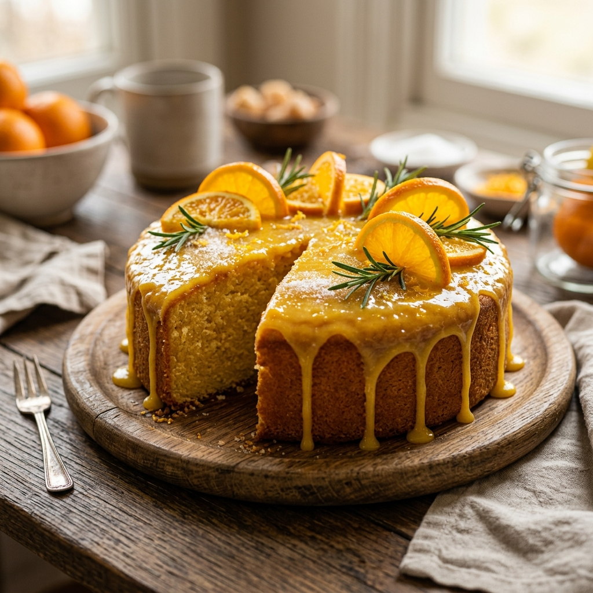

Bolo de laranja

Ingredientes
- 4 Ovos
- 1 xicara de cha de baunilha
- 1 casca de laranja
- leite
- farinha
- 200ml de suco de laranja
Modo de preparo
- misture os ovos com o leite e o suco
- acrescente a farinha
- rale a casca de laranja
- junte a baunilha a massa e misture ela